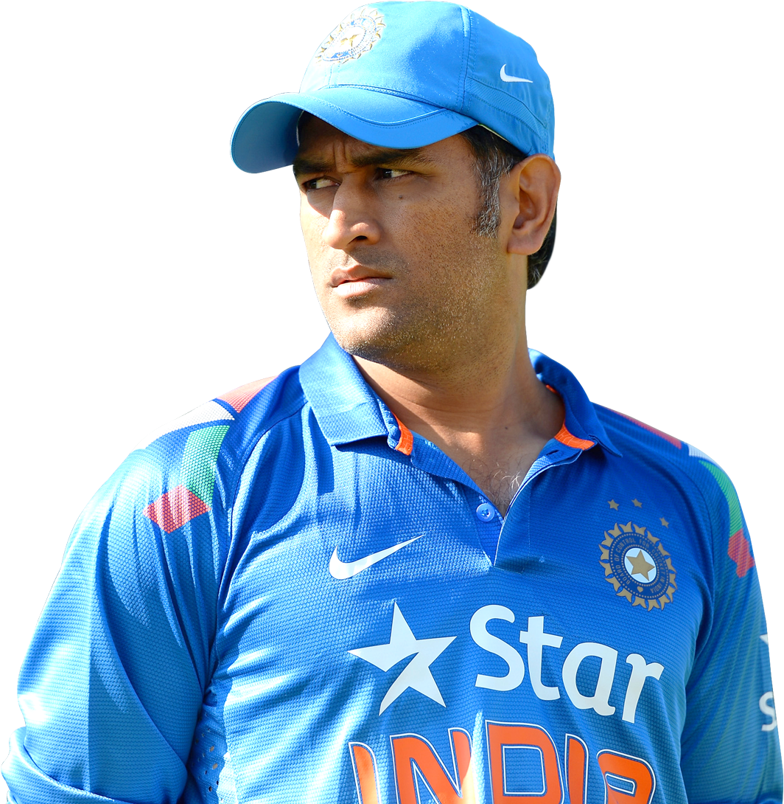

Glimpses from
his childhood
Mahendra Singh Dhoni (born 7 July 1981) is an former Indian cricketer. He was captain of the Indian national team in limited-overs formats from 2007 to 2017 and in Test cricket from 2008 to 2014. He plays as a right-handed wicket-keeper-batsman and is also the current captain of Chennai Super Kings in the Indian Premier League.
- MS Dhoni is among the top names on the list.
- MS Dhoni’s full name is Mahendra Singh Dhoni.
- He was the former captain of the Indian team for one-day, T20, and test cricket.
- He also led the team to their first-ever bilateral ODI series wins in Sri Lanka and New Zealand.
- Under Dhoni's captaincy, India became the first team to whitewash Australia in a Test series, after a time period of two decades.
Career
He debuted in first class and List A Cricket in the season of 1999–2000. In domestic cricket
circuit he played for the teams such as Bihar, Jharkhand, India A, Air India Blue, Indian
Board President's XI, Rajasthan Cricket Association President's XI, East Zone, Rest of India,
East zone under 19, Chennai Super Kings, Rising Pune Supergiant. In BCCI Corporate
trophy he played for Indian government owned Air India airlines's Air India team until his
resignation from the company in 2013. In 2009, BCCI Corporate trophy
Dhoni scored 106 runs playing for Air India Blue team against 'India Revenue' team.
In the inning he hit 7 sixes and 7 fours at Chandigarh.
Dhoni was contracted by the Chennai Super Kings (CSK) for US$1.5 million. This made
him the most expensive player in the IPL for the first season auctions.[140] Under his
captaincy, CSK won the 2010, 2011, 2018, 2021 and the 2023 Indian Premier League titles
the 2010 and 2014 Champions League T20 titles and ended up as a runner-up in 2008, 2012,
2015 and 2019 IPL league seasons.
Honours
National honours
- 2018: Padma Bhushan, India’s third-highest civilian award.
- 2009: Padma Shri, India’s fourth-highest civilian award.
- 2007–08: Major Dhyanchand Khel Ratna award, India’s highest honor given for achievement in sports
Sporting honours
- ICC ODI Player of the Year: 2008, 2009
- ICC World ODI XI: 2006, 2008, 2009, 2010, 2011, 2012, 2013, 2014 (captain in 2009, 2011–2014
- Castrol Indian Cricketer of the Year: 2011
- ICC Men’s ODI team of the decade: 2011–2020 (captain and wicketkeeper)
- ICC Men’s T20I team of the decade: 2011–2020 (captain and wicketkeeper)
- ICC Spirit of the cricket award of the decade: 2011–2020